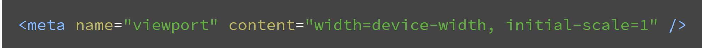

In our first class, we judged websites on many different factors.
One of which being the ability for it to translate to a mobile device.
Although this seems like it should be a simple thing to accomplish, it is more complicated than it seems.
Currently, 56% of all website traffic is through mobile devices and companies like Google have rethought their web development strategies.
They switched to mobile first indexing
, which is the process of developing a web page for a mobile device first and then refactoring it for a desktop.
This is different then the original approach that involved creating a website for a desktop and then refactoring it for a mobile device.
Mobile first indexing
emphasizes a well designed layout for people on mobile devices which is important because a bad website discourages users and makes them less likely to recommend the business as a whole.
Since the majority of users use mobile, businesses must pay extra attention to their mobile page.
88% of users that visit a business website on their phone either call or visit the business within 24 hours.
Because of this some sources are saying that mobile is one of the
front doors
to a physical business.
Below is an image of html code that allows a web developer to set the size of the screen they want to develop for.

Resources:
https://www.biznessapps.com/blog/mobile-first-approach/
https://developers.google.com/search/blog/2020/03/announcing-mobile-first-indexing-for